Air Conditioning / Heater
57 parts
1992 - 1996 Dodge Viper RT/10 A/C Drive Belt - Q4070775
Part # Q4070775
$80.00
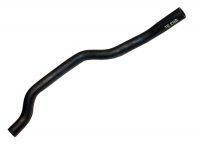
Out of stock1992 - 1997 Dodge Viper Engine to Water Valve Hose - 4763974
Part # 4763974
$39.00

1992 - 2002 Dodge Viper A/C Line O-Ring ( Discharge line ) - 4796565
Part # 4796565
$6.50
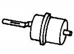
1992 - 2002 Dodge Viper Fresh Air Door Actuator Motor - 04874376
$85.00
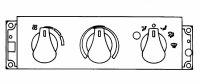
1992 - 2002 Dodge Viper Temperature Control Assembly - 05245298
Part # 05245298
$250.00
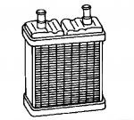
1992 - 2002 Dodge Viper USED Heater Core - 4874374
$299.99

1992 - 2002 Dodge Viper Water Valve to Heater Core Hose - 04642555
Part # 04642555AB
$49.00

1993 - 1996 Dodge Viper RT/10 Air Conditioning Compressor - 04708198
Part # 04708198
$550.00
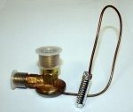
1993 - 2002 Dodge Viper A/C Expansion Valve - 04709102
Part # 04709102
$110.00
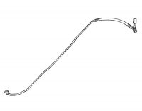
1993 - 2002 Dodge Viper A/C Liquid Line - 04848164
Part # 4848164
$199.00
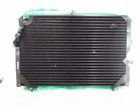
Out of stock1993 - 2002 Dodge Viper Air Conditioning Condenser - 04708206
Part # 04708206
$799.99
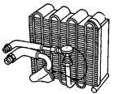
Out of stock1993 - 2002 Dodge Viper Air Conditioning Evaporator - 04708196AB
Part # 04708196AB
$549.00
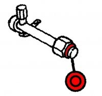
1993 - 2006 Dodge Viper A/C Line 5/8 O-Ring - 04796564
Part # 4796564
$6.00

1996 - 2002 Dodge Viper A/C Drive Belt - 04763795AD
Part # 4763795AD
$87.90
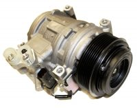
1996 - 2002 Dodge Viper Air Conditioning Compressor - 04848584AB
Part # 04848584AB
$456.00
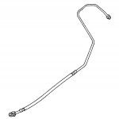
1996 - 2002 Dodge Viper Air Conditioning Discharge Line - 05264924AA
$250.00

1996 - 2002 Dodge Viper Heater Core to Engine Hose - 04763975AC
Part # 04763975AC
$49.00

1996 - 2002 Dodge Viper Heater Return Hose - 05245459
$15.00

1996 - 2002 Dodge Viper Heater Return Tube - 05245458AC
Part # 05245458AC
$90.00

1996 - 2008 Dodge Viper A/C Drier Line O-Ring - 05066637AA
Part # 05066637AA
$5.50
 Out of stock
Out of stock1999 - 2002 Dodge Viper Engine to Water Valve Hose - 04763974AC
Part # 04763974AC
$39.00
 Out of stock
Out of stock2003 - 2006 Dodge Viper Accessory A/C Drive Belt - 05037206AD
Part # 05037206AD
$52.00
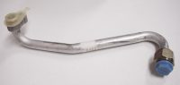
2003 - 2010 Dodge Viper A/C Suction Line - 05264928AA
Part # 5264928AA
$18.00
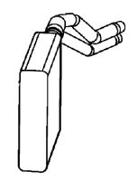
2003 - 2010 Dodge Viper Air Conditioning Evaporator - 05093246AA
Part # 05093246AA
$275.00

2003 - 2010 Dodge Viper HVAC Resistor - 05014212AA
$229.00
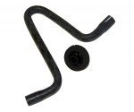
2003 - 2010 Dodge Viper SRT10 A/C Drain Kit - 05104821AA
Part # 05104821AA
$38.00

2003 - 2010 Dodge Viper SRT10 A/C Suction Line - 05264988AG
Part # 05264988AG
$205.00
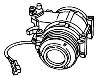
2003 - 2010 Dodge Viper SRT10 Air Conditioning Compressor - 05290012AD
Part # 5290012AD
$553.00
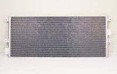
Out of stock2003 - 2010 Dodge Viper SRT10 Air Conditioning Condenser - 5264991AC
Part # 05264991AC
$899.99
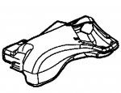
2003 - 2010 Dodge Viper SRT10 Fresh Air Inlet Plenum - 04865640AD
Part # 04865640AD
$215.00
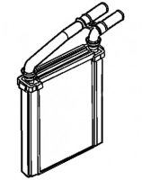
2003 - 2010 Dodge Viper SRT10 Heater Core - 05093247AB
Part # 05093247AB
$135.00
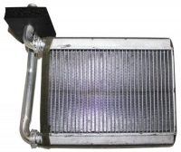
2003 - 2010 Dodge Viper SRT10 Heater Core - 5093247AB
Part # 05093247AB
$133.00
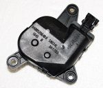
2003 - 2010 Dodge Viper SRT10 HVAC Actuator - 4885206AB
$186.00
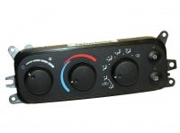
Out of stock2003 - 2010 Dodge Viper SRT10 Temperature Control Assembly - 04865810AD
Part # 4865810AD
$104.00

2003 - 2013 Dodge SRT Viper A/C Line O-Ring - 5072893AA
Part # 5072893AA
$4.00

2003 - 2013 Dodge SRT Viper Heater Floor Duct - 04865809AA
Part # 4865809AA
$15.00

2003 - 2017 Dodge Viper SRT10 HVAC Blower Motor - 05093248AB
Part # 5093248AB
$200.00

2003 Dodge Viper A/C Liquid Line - 05264926AC
Part # 05264926AC
$100.00

2003 Dodge Viper A/C ORIFICE - 05093077AA
Part # 05093077AA
$40.00

2004 - 2010 Dodge Viper SRT10 A/C Accumulator - 05264990AD
Part # 05264990AD
$149.00

2004 AFTER 01-08-04 Dodge Viper A/C Liquid Line - 5264926AE
Part # 05264926AE
$100.00
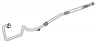
2004 UP TO 01-08-04 Dodge Viper A/C ORFICE - 05093077AA
Part # 05093077AA
$40.00

2004 UP TO 01/08/04 Dodge Viper A/C Liquid Line - 05264926AC
Part # 05264926AC
$100.00

2005 - 2010 Dodge Viper A/C Liquid Line - 5264926AE
Part # 05264926AE
$155.00
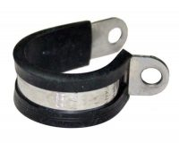
2005 - 2013 Dodge SRT Viper A/C Clamp - 05290366AA
Part # 05290366AA
$9.75

2005 - 2013 Dodge SRT ViperBrake Line Clamp - 05039000AA
Part # 05039000AA
$2.20
 Out of stock
Out of stock2008 - 2010 Dodge Viper Accessory A/C Drive Belt - 05037862AD
Part # 05037862AD
$34.00
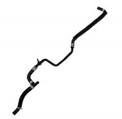
2008 - 2010 Dodge Viper SRT10 Heater Return Hose - 05030628AD
Part # 5030628AD
$135.00

1992-2002 Dodge Viper Heater Water Control Valve 4642554
Part # 4642554
$59.99
2003 - 2010 complete SRT HVAC System
Part # 4865642AG
$1,000.00
2003 - 2010 Dodge Viper HVAC Resistor - 05014212AA
Part # 05014212AA
$229.00
2003 - 2010 Dodge Viper Insturment Panel Center AC Duct 04865552AA
Part # 04865552AA
$43.00
2003 - 2010 Dodge Viper Insturment Panel Defrost Duct 04865541AA
Part # 04865541AA
$42.00
2003 - 2010 Dodge Viper Insturment Panel Left AC Duct 04865545AA
Part # 04865545AA
$10.00
92 VIPER FRESH AIR INTAKE PLENUM 04642798
$500.00
94-96 Viper gen 1 engine cooling tube 5245042
$95.00
96-02 VIPER FRESH AIR PLENUM HEATER BOX 04763858AC
$500.00